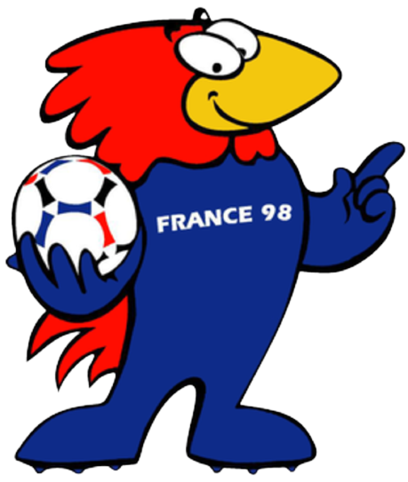

Personagens
João Benedito Pereira, apelido BallHead, é um garoto de 20 anos alto, corpo atlético formado pelos trabalhos pesados que fez e faz, com muitos sonhos, porém sua realidade o fez desistir deles, dedicado, trabalhador, fanático por futebol, humilde, mas determinado, equipado com a roupa da seleção que conseguiu comprar com muito esforço e com sua habilidade com a bola ele não tem medo, mas tem talento.
Cientista Antônio Soccer da Silva, 52 anos, fanático por futebol, vindo de família rica, dinheiro nunca foi um empecilho para ele, muito inteligente conseguiu bolsa para ótimas faculdades, estudou arduamente, porém todos os seus esforços foram aplicados para que pudesse realizar sua vingança contra a organização FIFA que se corrompeu e por seu pai que foi vítima da corrupção podre que assola até mesmo o mundo esportivo .
Ciao: foi o representante da Copa de 1990, em solo italiano. a mascote, quando desmontado, formava a palavra Itália. A palavra "ciao", em italiano, é usada tanto para se despedir como para dar as boas-vindas a alguém.
Fuleco: O tatu-bola Fuleco foi a mascote escolhida para a Copa de 2014, que aconteceu aqui no Brasil. Seu nome é uma junção das palavras futebol e ecologia, representando a preocupação com as pautas ligadas à natureza.
Zakumi: o mascote da copa de 2010 era um leopardo, animal típico da savana africana. Zakumi tinha o pelo amarelo e o cabelo verde, assumindo as cores da bandeira nacional.

Footix: Footix foi o mascote da copa de 1998 da França era um galo azul de cabeça vermelha, representando as cores nacionais. Além disso, o sufixo ix em seu nome é uma referência aos Gauleses (só lembrar do famoso personagem francês Asterix, que também tem o sufixo no nome).
Cenários
Os cenários serão estádios utilizados durante as copas, e cada um deles pertencente ao país de origem das mascotes que serão enfrentadas no jogo, e para aumentar a dinamicidade os cenários contarão com plataformas temáticas em forma de traves para aumentar a mobilidade do personagem
Giuseppe Meazza - Itália, Copa de 1990

FBN Stadium - África, Copa de 2010

Maracanã - Brasil, Copa de 2014

Stade de France - França, Copa de 1998